Säg det rätt – ord för ord
Säg en mening högt och se direkt vilka ord som satt. Talspegel lyssnar på telefonen – inget ljud sparas. Vardag, jobb, vård och svåra ljud som sj och tj.
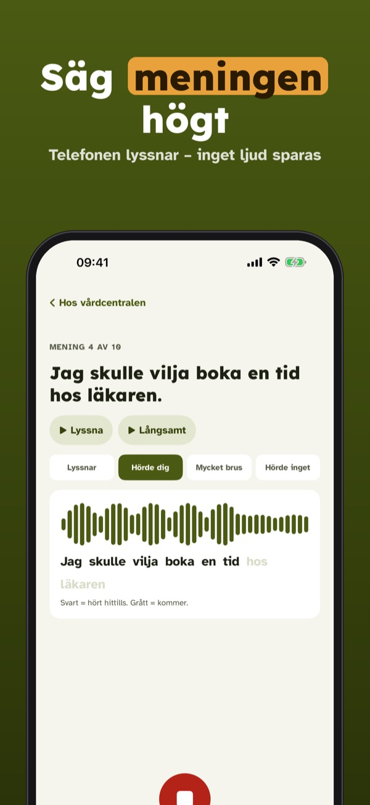
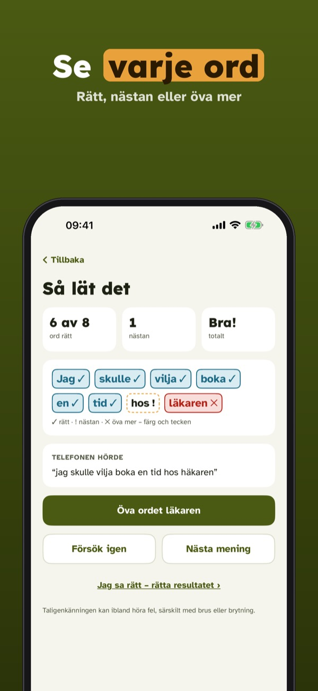
Talspegel hjälper dig som lär dig svenska att låta säker. Säg meningen, och telefonen visar ord för ord vad som gick bra och vad du kan öva mer på.
Fem meningar om dagen, svar ord för ord och ämnet Vardag kan användas utan köp. Talspegel Plus är ett engångsköp som låser upp alla ämnen, svåra ljud, egna meningar och statistik. Ingen prenumeration.
Talspegel är ett övningsverktyg, inte en kurs eller behandling, och är inte knuten till någon skola eller myndighet. Taligenkänningen kan ibland höra fel – du kan alltid rätta resultatet.
Terms of Use (EULA): https://www.apple.com/legal/internet-services/itunes/dev/stdeula/
Privacy: https://baytechbv.github.io/privacy/talspegel-nordic/
Sig det rigtigt – ord for ord
Sig en sætning højt, og se med det samme hvilke ord der sad. Udtalespejl lytter på telefonen – ingen lyd gemmes. Hverdag, job, læge og svære lyde som stød.
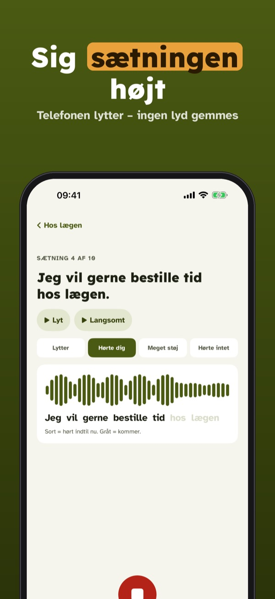
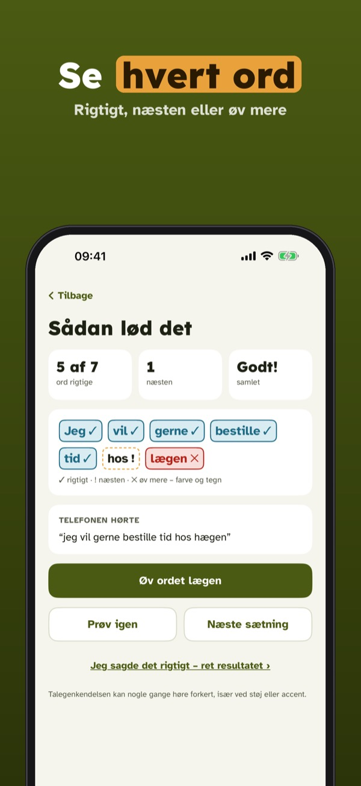
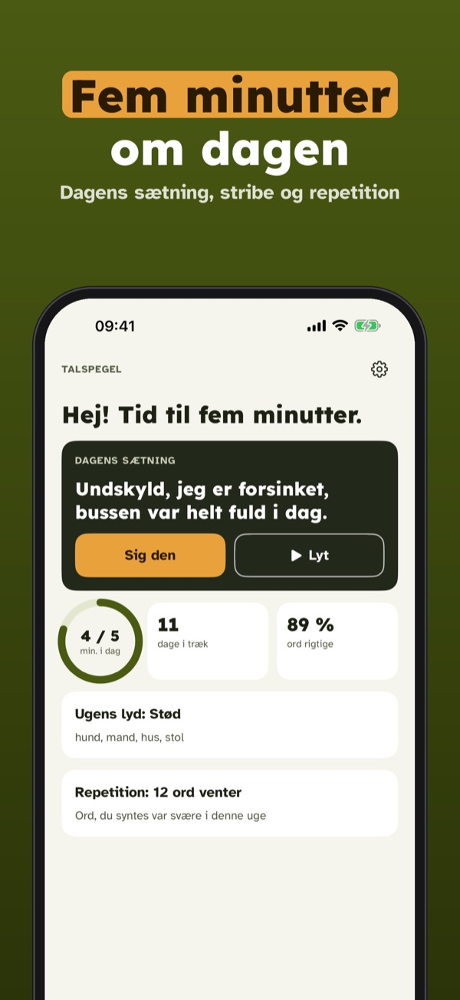
Udtalespejl hjælper dig, der lærer dansk, med at lyde sikker. Sig sætningen, og telefonen viser ord for ord, hvad der gik godt, og hvad du kan øve mere.
Fem sætninger om dagen, svar ord for ord og emnet Hverdag kan bruges uden køb. Udtalespejl Plus er et engangskøb, der låser alle emner, svære lyde, egne sætninger og statistik op. Intet abonnement.
Udtalespejl er et øveværktøj, ikke et kursus eller en behandling, og er ikke tilknyttet nogen skole eller myndighed. Talegenkendelsen kan nogle gange høre forkert – du kan altid rette resultatet.
Terms of Use (EULA): https://www.apple.com/legal/internet-services/itunes/dev/stdeula/
Privacy: https://baytechbv.github.io/privacy/talspegel-nordic/
Si det riktig – ord for ord
Si en setning høyt, og se med en gang hvilke ord som satt. Uttalespeil lytter på telefonen – ingen lyd lagres. Hverdag, jobb, lege og vanskelige lyder.
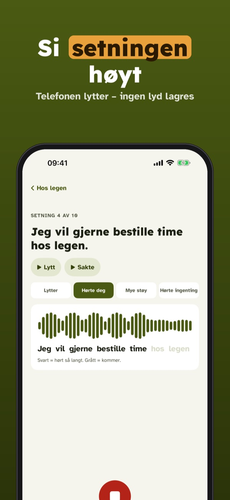
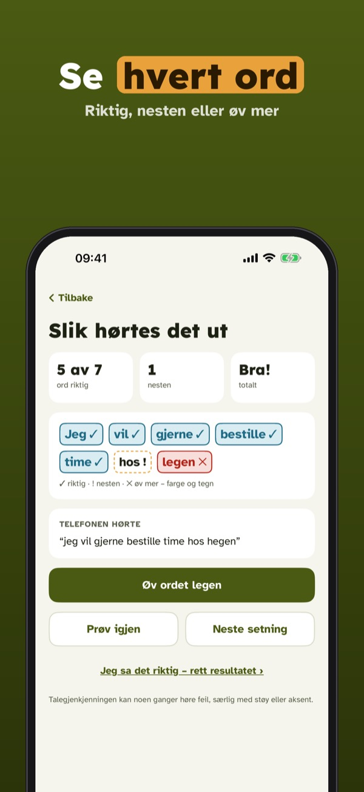
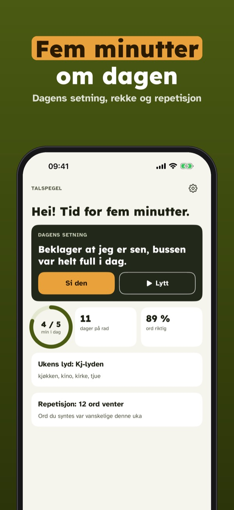
Uttalespeil hjelper deg som lærer norsk å høres trygg ut. Si setningen, og telefonen viser ord for ord hva som gikk bra og hva du kan øve mer på.
Fem setninger om dagen, svar ord for ord og temaet Hverdag kan brukes uten kjøp. Uttalespeil Plus er et engangskjøp som låser opp alle temaer, vanskelige lyder, egne setninger og statistikk. Ingen abonnement.
Uttalespeil er et øvingsverktøy, ikke et kurs eller en behandling, og er ikke knyttet til noen skole eller myndighet. Talegjenkjenningen kan av og til høre feil – du kan alltid rette resultatet.
Terms of Use (EULA): https://www.apple.com/legal/internet-services/itunes/dev/stdeula/
Privacy: https://baytechbv.github.io/privacy/talspegel-nordic/
Spreek het uit, zie elk woord
Zeg een zin hardop en zie meteen welke woorden goed gingen. Talspegel luistert op je telefoon – er wordt geen geluid bewaard. Dagelijks leven, werk en dokter.
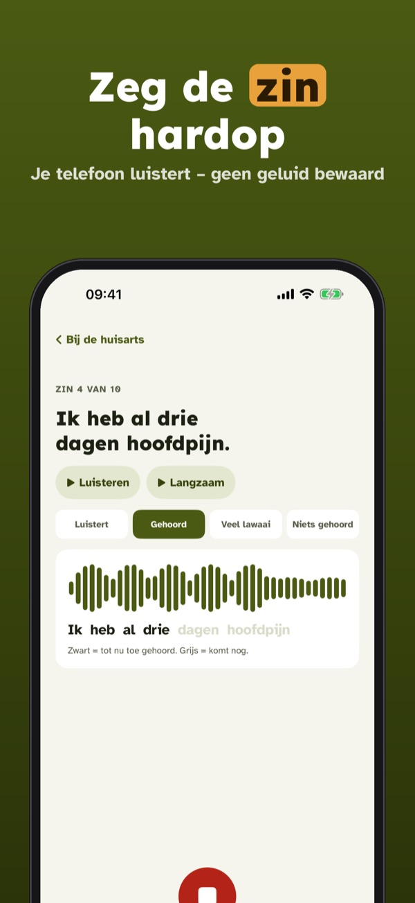
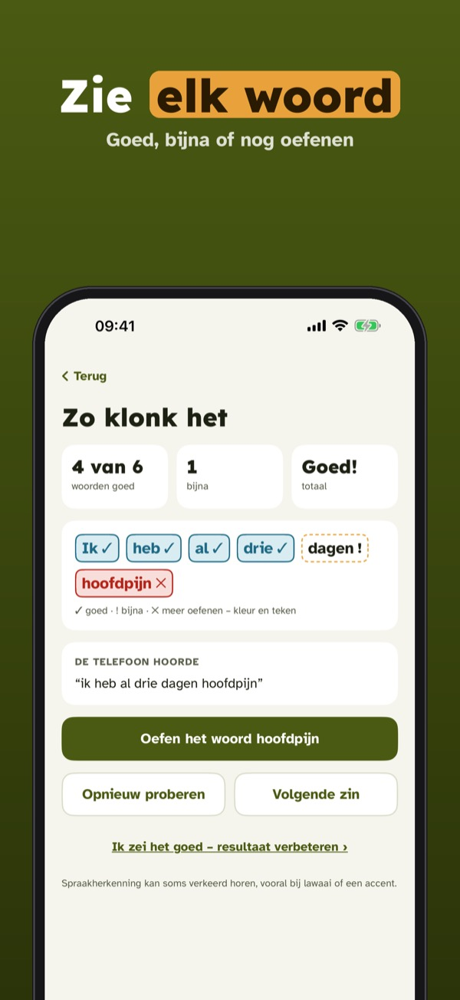
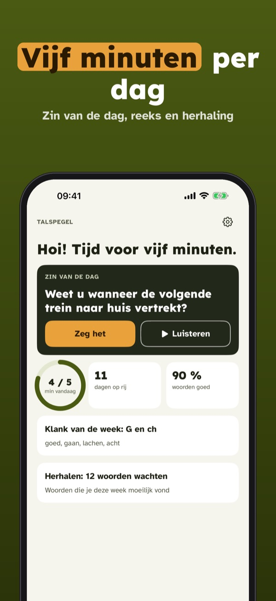
Talspegel helpt je als je Nederlands leert om zeker te klinken. Zeg de zin, en je telefoon laat woord voor woord zien wat goed ging en wat je kunt oefenen.
Vijf zinnen per dag, antwoord per woord en het onderwerp Dagelijks leven gebruik je zonder aankoop. Talspegel Plus is een eenmalige aankoop voor alle onderwerpen, klanken, eigen zinnen en statistiek. Geen abonnement.
Talspegel is een oefenhulp, geen cursus of behandeling, en is niet verbonden aan een school of overheid. De spraakherkenning kan soms verkeerd horen – je kunt het resultaat altijd corrigeren.
Terms of Use (EULA): https://www.apple.com/legal/internet-services/itunes/dev/stdeula/
Privacy: https://baytechbv.github.io/privacy/talspegel-nordic/
Sprich nach – Wort für Wort
Sprich einen Satz laut und sieh sofort, welche Wörter saßen. Talspegel hört auf dem Handy zu – kein Ton wird gespeichert. Alltag, Arbeit, Arzt und schwere Laute.
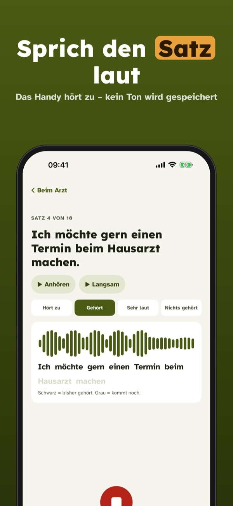
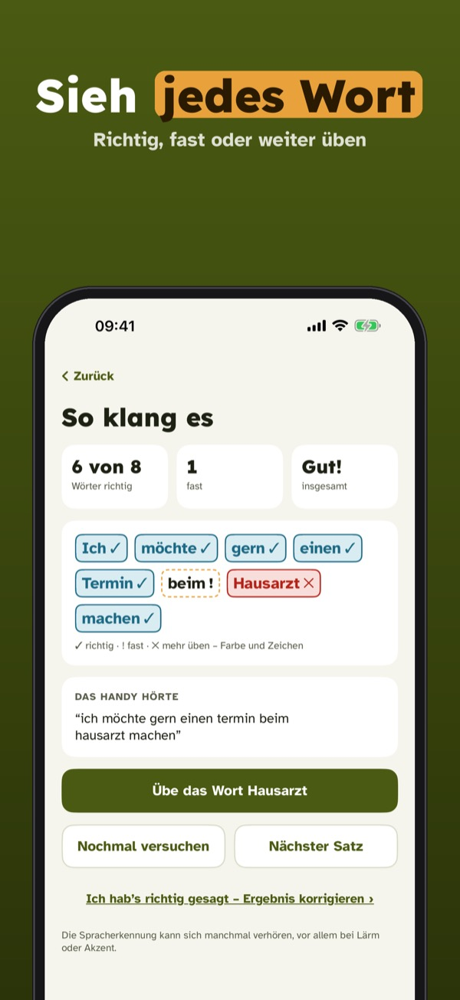
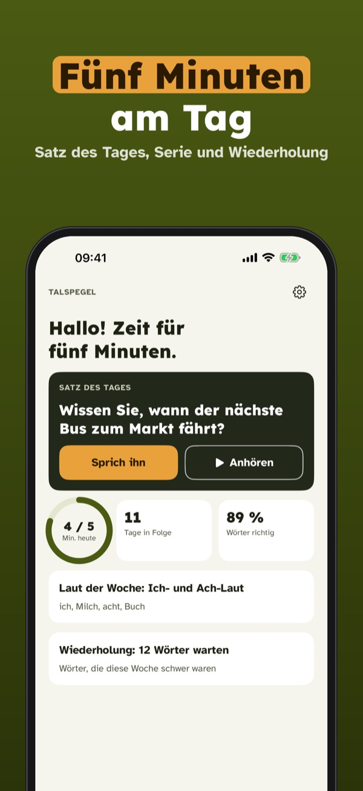
Talspegel hilft dir beim Deutschlernen, sicher zu klingen. Sprich den Satz, und dein Handy zeigt Wort für Wort, was gut lief und was du noch üben kannst.
Fünf Sätze pro Tag, Rückmeldung pro Wort und das Thema Alltag sind ohne Kauf nutzbar. Talspegel Plus ist ein Einmalkauf für alle Themen, schweren Laute, eigenen Sätze und Statistiken. Kein Abo.
Talspegel ist eine Übungshilfe, kein Kurs und keine Behandlung, und gehört zu keiner Schule oder Behörde. Die Spracherkennung kann sich verhören – du kannst das Ergebnis jederzeit korrigieren.
Terms of Use (EULA): https://www.apple.com/legal/internet-services/itunes/dev/stdeula/
Privacy: https://baytechbv.github.io/privacy/talspegel-nordic/